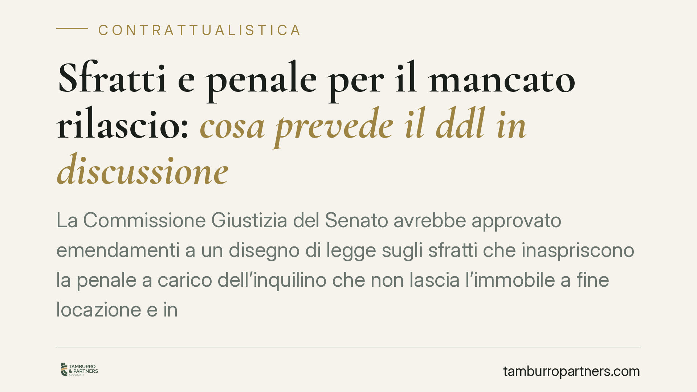

Sfratti e penale per il mancato rilascio: cosa prevede il ddl in discussione
La Commissione Giustizia del Senato avrebbe approvato emendamenti a un disegno di legge sugli sfratti che inaspriscono la penale a carico dell'inquilino che non lascia l'immobile a fine locazione e introducono una procedura di rilascio più rapida. Attenzione: si tratta di un testo in corso di esame, non ancora diritto vigente. Vediamo cosa cambierebbe e con quali cautele leggere la notizia.

Il contesto: un testo in itinere, non una legge
Secondo quanto riferito sull'iter parlamentare, la Commissione Giustizia del Senato avrebbe approvato emendamenti a un disegno di legge in materia di sfratti. Le modifiche punterebbero a inasprire la penale giornaliera a carico dell'inquilino che non rilascia l'immobile alla scadenza della locazione e a introdurre una nuova forma di ingiunzione di rilascio con tempi ridotti.
Un chiarimento necessario prima di ogni valutazione: il testo non è ancora legge. Si tratta di un disegno di legge in corso di esame, soggetto a ulteriori passaggi e a possibili modifiche in entrambi i rami del Parlamento. I dettagli numerici e procedurali qui riportati vanno pertanto letti come ipotesi di lavoro, non come regole già operative. Consigliamo di verificare gli estremi dell'atto Senato e il testo consolidato prima di assumere qualsiasi decisione.
Inquadramento normativo
Le locazioni abitative sono oggi disciplinate principalmente dalla legge n. 431/1998 e dalle norme generali del codice civile (artt. 1571 e seguenti c.c.). La legge n. 392/1978 (c.d. equo canone) conserva rilievo solo per profili residui, in particolare per alcune locazioni non abitative e per determinate ipotesi transitorie: non è il riferimento generale per l'abitativo.
Sul piano processuale, il rilascio dell'immobile a fine locazione passa dal procedimento di convalida di sfratto per finita locazione (art. 657 c.p.c.). Sul fronte risarcitorio, l'art. 1591 c.c. già prevede che il conduttore in mora nella restituzione debba il canone fino alla riconsegna, oltre al risarcimento del maggior danno eventualmente provato. Esiste inoltre l'astreinte dell'art. 614-bis c.p.c., misura di coercizione indiretta che il giudice può disporre per indurre all'adempimento di obblighi non pecuniari.
Implicazioni pratiche
Il punto qualificante del ddl riguarderebbe la penale per il mancato rilascio: l'ipotesi è un passaggio dall'1% al 3% del canone mensile per ciascun giorno di ritardo.
È utile esplicitare la base di calcolo per evitare equivoci. La percentuale si applicherebbe al canone mensile, ma su base giornaliera. Con un canone di 800 euro:
- all'1%: 8 euro al giorno, pari a circa 240 euro per trenta giorni;
- al 3%: 24 euro al giorno, pari a circa 720 euro per trenta giorni.
L'impatto cumulativo è evidente: nell'ipotesi più severa, un mese di ritardo produce una penale quasi pari a un intero canone, oltre al canone stesso dovuto per l'occupazione. È proprio questo l'effetto deterrente perseguito dalla riforma.
Sul piano dei rapporti tra istituti, occorre tenere distinti tre profili. La penale forfettaria (se confermata) semplificherebbe la quantificazione, ma non eliminerebbe di per sé la possibilità per il proprietario di provare un maggior danno ai sensi dell'art. 1591 c.c., salvo che la norma la configuri come tetto. L'eventuale astreinte ex art. 614-bis c.p.c. opera su un piano diverso, come pressione all'adempimento, non come risarcimento.
Va infine ribadito un dato che la notizia rischia di oscurare: la penale non sostituisce il procedimento di rilascio né il titolo esecutivo. Per riottenere l'immobile restano necessari la convalida e l'esecuzione forzata. La penale incide sul quantum dovuto, non sul percorso per riavere la disponibilità del bene.
Cosa fare in concreto
- Verifica gli estremi dell'atto Senato e attendi il testo consolidato: finché il ddl non è approvato, le regole attuali restano invariate.
- Rileggi le clausole dei contratti in essere relative alla restituzione e agli effetti della mora, per misurare l'eventuale impatto delle nuove previsioni.
- Distingui nella tua valutazione i tre piani: penale, maggior danno ex art. 1591 c.c. e astreinte ex art. 614-bis c.p.c.
- Documenta per tempo data di scadenza, comunicazioni e stato di occupazione: la prova del ritardo e dell'eventuale danno resta decisiva.
Le tendenze legislative di questo tipo vanno seguite nel loro iter completo. Pubblicheremo un aggiornamento quando il testo sarà definitivo.
Disclaimer
Contributo informativo a cura di Tamburro & Partners - Avv. Giuseppe Tamburro. Non costituisce parere legale.
Ogni contratto ha il suo equilibrio.
Se vuoi una revisione delle clausole o una redazione su misura, scrivi allo studio. Ti rispondiamo entro un giorno lavorativo.